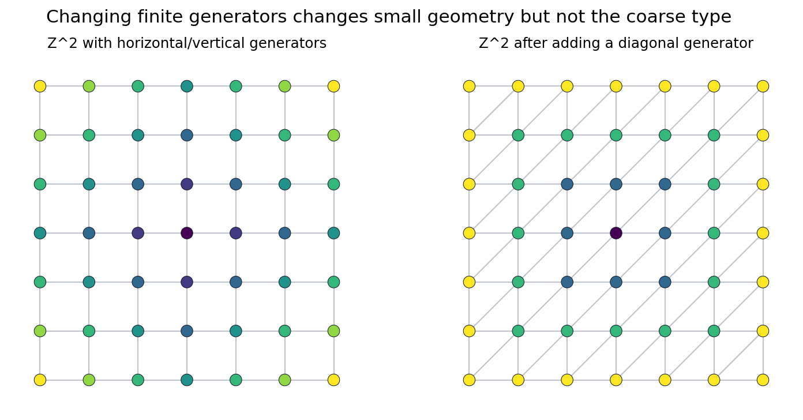
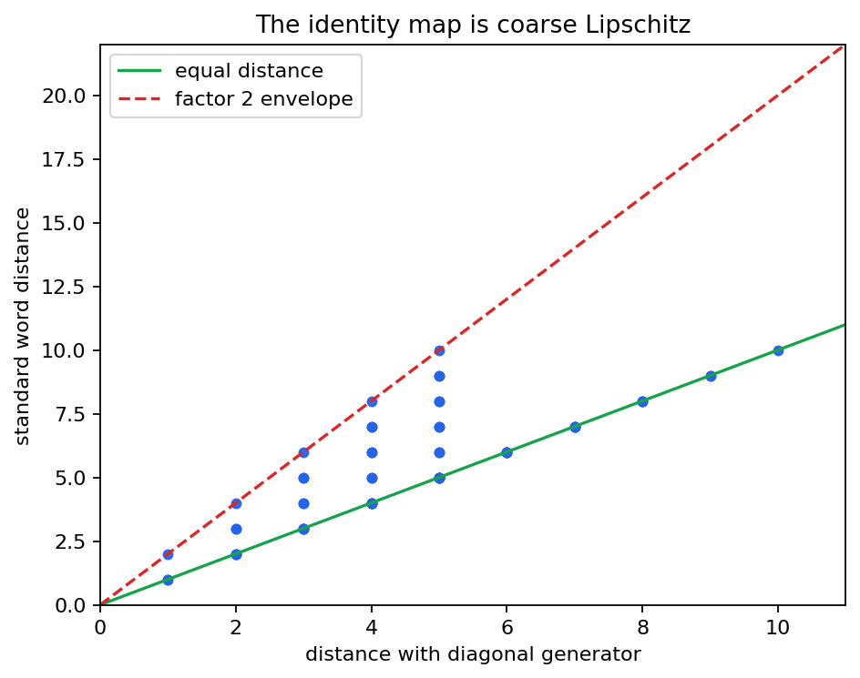

Chapter 05 studies when metric spaces, Cayley graphs, and group actions have the same large-scale geometry.
Which geometric features survive after bounded local errors and finite changes of generators are ignored?
If \(S\) is a finite generating set of \(G\), the word length \(|g|_S\) is the shortest number of letters from \(S \cup S^{-1}\) needed to express \(g\).
The Cayley graph records one unit edge for every generator move. Distances count shortest edge paths.

The saved check records maximum standard-over-diagonal ratio \(2.0\) on the sampled window.
A map \(f:X\to Y\) is coarse Lipschitz if there are \(A,B\) such that
Subdivision, finite decorations, and bounded jitter can be invisible at large scale.
Unbounded growth of distances must still be seen as unbounded growth of distances.
For every \(y \in Y\), some \(x \in X\) satisfies \(d_Y(y,f(x)) \le C\).
There is a coarse inverse \(g:Y\to X\) so that \(g\circ f\) and \(f\circ g\) move points only a bounded distance.
A line embedded in a plane has good intrinsic distance control, but it misses most of the target at unbounded distance.

| Quantity | Value |
|---|---|
| sample pairs | 120 |
| sample radius | 5 |
| coarse Lipschitz constant | 2.0 |
| max additive error | 5.0 |
Finite plots do not prove the theorem. They train the eye to look for uniform inequalities that could be proved at every scale.
A parametrized path \(\gamma\) is quasi-geodesic when distances along the parameter and distances in the space are linearly comparable up to additive error.
In geometric group theory, routes often come from words, normal forms, or actions rather than from exact shortest paths.
If \(G\) acts properly, cocompactly, and by isometries on a proper geodesic space \(X\), then an orbit map \(g \mapsto g\cdot x_0\) is a quasi-isometry.
A compact fundamental region is a ruler. Moving between nearby regions costs a bounded number of generators.
Look for elements that are long inside \(H\) but have unexpectedly short representatives in \(G\).
In the integer Heisenberg group, central powers can be built by commutator boxes.
The cyclic subgroup generated by the central element has intrinsic length like \(m^2\), while ambient representatives have length on the order of \(m\).
How fast balls grow, after allowing coarse rescaling of radius.
How many unbounded directions remain after removing a large finite region.
Whether triangles are uniformly thin at large scale.
Whether large finite regions can have small boundary compared with volume.
Can every large-scale journey in one space be translated into the other with one set of constants?
Start with \(\mathbb{Z}^2\). Add a new generator such as \((2,1)\). Recompute sampled distances and plot the old metric against the new one.
Let \(T=\{(\pm1,0),(0,\pm1),\pm(2,1)\}\). Find constants \(A,B\) comparing \(d_S\) and \(d_T\) on \(\mathbb{Z}^2\).
Every old generator is already in \(T\). Express the new generator \((2,1)\) as a bounded word in the old generators.
The identity map is a quasi-isometry, but the best constants may improve in directions close to the new generator.
Growth, hyperbolicity, ends, and amenability become meaningful because this chapter defines the large-scale equivalence relation they respect.